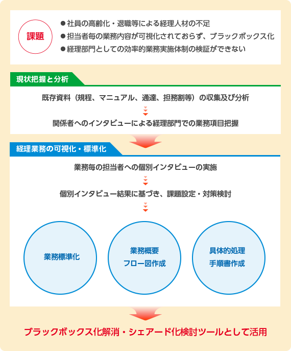

経理業務可視化・標準化に向けたコンサルティングを実施！
経理部門における「経理人材不足」と「業務品質の維持向上」等の喫緊の課題への対処、及び将来のシェアード化等の検討を進めるにあたって必要なツールとして、経理業務の「可視化」「標準化」を行い、標準作業手順書（SOP）を作成した事例です。
お客さま情報
コンタクトセンターA社様 売上高600億円 従業員数800名
委託業務内容
経理・財務関連
（経理業務を「可視化」「標準化」するための業務フロー及び具体的手順書の作成）

当初の課題認識
経理業務を管理者２名、係長４名、担当者４名で実施していたが、業務毎に担当者が固定化されていた。このため、業務フロー等がブラックボックス化し、他の社員が業務を行えなくなっていたとともに、業務全体の手順等が分からず、経理部門としての効率的な業務実施体制の検証もできない状況にあった。
会社として事業の拡大、コンプライアンス遵守のための経理品質の維持向上等、経理部門の業務量が増えていく中、新たな経理人材を確保することが困難になるため、業務を可視化・標準化し、効率的な業務実施体制を構築することが急務となっていた。
また、業務毎に標準作業手順書（SOP）を作成し、特定の担当者に頼っていた業務を部門内の誰でも処理可能にしたいと考えていた。更に将来的に経理業務のシェアード化も検討しており、業務の可視化が不可欠と考えていた。
業者選定のポイント
経理業務の実務経験と標準化プロセスについて精通していることはもちろんのこと、シェアード化を視野に入れ、業務効率化と業務品質の維持向上を両立できるノウハウを持ち、さらに誰にでもわかる実務に沿ったわかりやすい手順書等を作成できる会社を希望されていた。
NTTビジネスアソシエを選んだ決め手
NTTビジネスアソシエ自体が、NTTグループのシェアードサービス会社として安定した経理業務を提供するため可視化・標準化に取り組んできており、その経験に基づいた、実務的でより効率的な業務フロー・標準作業手順書の提案が期待できた。また、NTTグループ以外の一般会社の経理業務マニュアル等作成について、積極的に取り組んでいることについて評価された。
お客さまの声
既存資料の分析、担当者・関係者へのインタビュー等を通じて現状業務を詳細に把握し、さらに標準化した上で業務概要フロー図や標準作業手順書等を作成できました。これにより、経理部門全体の業務内容・手順を詳細に理解でき、今後の業務運営体制検討に非常に役立ちました。また、手順書等も実務に沿った、業務のポイントが解り易い内容となっており、担当者が不在の場合でも部門内の誰しもが補正や指導を適切に行えるようになりました。
コンサルティングの概要
